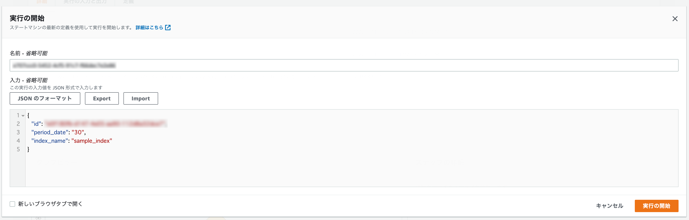

はじめに
Glue を使ってデータ連携する際に，例えばデータ連携したい期間を変えたり，環境情報を渡したり，などのパラメータを与えて実行したい場合の備忘録です．特に，Step Functions (SFn) 経由で Glue を実行する場合に，インプットパラメータに必要な情報を渡してそれを Glue にどう紐付けるかに関する内容になってます．
今回の内容は，実務で発生した検索エンジンのインデックスに簡単にデータを流せるように，SFn のパイプラインのインプットにパラメータを渡すだけで実行できるようにしたかったので，その時に実施したお話です．
Glue のジョブパラメータ設定
ジョブパラメータは Glue 実行時に渡すことができるパラメータで，デフォルトでもいくつか用意されています（参考：Job parameters used by AWS Glue）．
これに自前で用意したパラメータを受け取りたい場合，getResolvedOptions の第二引数にリストに渡されてくるパラメータを定義します．これは後ほどの SFn のインプットに与えて Glue で受け取るものです．
# JobName: sample_glue_job
import sys
from awsglue.utils import getResolvedOptions
# 動的に切り替えたい or 環境により変化する部分をパラメータとして受け取る
args = getResolvedOptions(
sys.argv,
["period_date", "index_name"]
)
# データ連携したい期間
period_date = int(args["period_date"])
# データを投入する検索エンジンのインデックス名
index_name = args["index_name"]
...(実際の処理が続く)
パラメータは文字列のみしか受け付けないので，期間を数値で使いたい場合は，上記コードのように数値型に変換する必要があります．
Step Functions の input にデータを渡して Glue で使う方法
Glue ジョブが作成できたら，それを Step Functions で動かしていきます．
以下に Step Functions の State Machine のサンプルコードを載せていますが，ポイントは glue:startJobRun.sync アクションの Parameters にある Arguments の設定です．input パラメータを渡す場合は，$を key の末尾と value の先頭に付与する必要があります（参考：Pass Parameters to a Service API）．
また，key の先頭に--を付与しないとパラメータと認識されずにエラーになるので，注意が必要です．
{
"Comment": "Glueでデータ連携を行うステートマシン",
"StartAt": "Glue-Job",
"States": {
"Glue-Job": {
"Type": "Task",
"Resource": "arn:aws:states:::glue:startJobRun.sync",
"Parameters": {
"JobName": "sample_glue_job",
"Arguments": {
"--period_date.$": "$.period_date",
"--index_name.$": "$.index_name"
}
},
"Catch": [
{
"ErrorEquals": [
"States.ALL"
],
"Next": "FailState"
}
],
"Comment": "データ連携用のGlueジョブ",
"Next": "Success"
},
"Success": {
"Type": "Succeed"
},
"FailState": {
"Type": "Fail",
"Cause": "Error",
"Error": "Error"
}
}
}
SFn のコンソールから実行する場合，下図のように実行前の画面で JSON 形式で必要なパラメータを渡すことで，SFn で定義した Glue のジョブパラメータに値がセットされます．
今回の場合だと，period_date と index_name をパラメータとして SFn の input から渡して，Glue でそれらを受け取り ETL 処理を実行していきます．

おわりに
今回は Step Functions の input パラメータを変更することで，簡単に Glue のジョブパラメータに値を渡してパイプラインを実行する方法を紹介しました．
Glue Studio からコードを直接変更することでもできますが，毎回コードを変更するのはバグが混入する可能性もあるので，パイプライン実行時の input で制御できた方が汎用性があり，シンプルかなと思い試してみました．